Ürümqi (烏魯木齊) has a general silence to it at 20:00. From the airport to the hotel, it’s an expanse of nothing and smoke from cigarettes, much like any other Chinese city.
The hotel receptionists clock me as an overseas Chinese, and I make no issue of it. They are administrative – in the Chinese way – and get me to my room. My flight tomorrow is to Kashgar (喀什).
I start seeing non-Han Chinese people at the airport, there are about 10 I spot on the flight, and that is just a taste of what’s to come. The airport is quiet, with the few usual touts. I need to head to the police station to apply for a Kashgar Visitors Permit and meet my first Uyghur man driving.
He doesn’t say much—in fact, he says nothing. I confirm my telephone number, and he takes me to the station. The station promptly tells me they don’t take foreigners, and to go to the next stop. I call another DiDi car, and the same driver comes back, this time with a smile. We play this game of tag one more time, when the driver anticipated that I would make the same mistake again, and he is right. He takes me to the Kashgar Administration office, main branch, only for me to wait 30 minutes for another failure. The lady working the counter was extremely friendly.
Eventually, I get the Kashgar Border Permit at a hotel behind the queue with a bunch of Malaysians. This group was also at the second stop I went to, presumably here because of the chaos that was at the previous stop. The lady manning the queue was Uyghur, and the second sign of a friendly and talkative face. She looked sort of Latina, sort of east Asian, and was chatting openly with the Malaysians, and then later to me during my application. As a solo traveller, I was the last one to apply, and so she asked about what I do for work while her colleague – also an ethnic Uyghur – was punching away at her computer. The third colleague, also a minority, was on her phone decidedly uninterested in the conversation.
Throughout the day, I meet a mix of open Uyghurs, and some who don’t pay me any time of day. Their tones in Mandarin are tough to grasp and come across rough, but warm. If not for them living in China, they would be chatting all the time in their own ethnic tongue (I can’t quite distinguish if it’s Uyghur, or some Uzbek or Kyrgyz language).
I finally make it to the hotel, who is loosely guarded by a doorman. He is an ethnic man with deep set green eyes smoking a cigarette casually. There are schoolchildren running around in blue and white uniform, off for their morning recess. They flood the streets and hang around in and on any open space.
The doorman sees me, looks at me and smiles and guides me to the front desk, which is manned by a Han-passing woman. He then disappears for what seems like minutes, only to reappear with tea, grapes and dried dates, with a smile. He moves position and sits into the corner, always catching my gaze with a smile. He is like the DiDi taxi driver, not saying much, but with a certain warmth.
---
Kashgar is split into the eastern and western old town, and I spend the day in the eastern side. I stroll around and take some pictures of the town, which was recently done up in 2022. While the main thoroughfares are gentrified outdoor markets, the smaller streets in between have preserved the essence of an ancient desert town: clay walls with coloured doors and alleys that snake throughout. Occasionally, I come across a nicely paved street lined with plants, and mats on raised platforms for laying down outside.
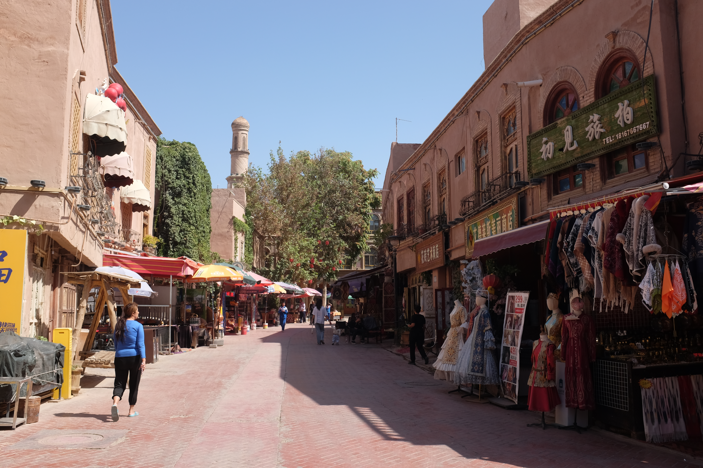
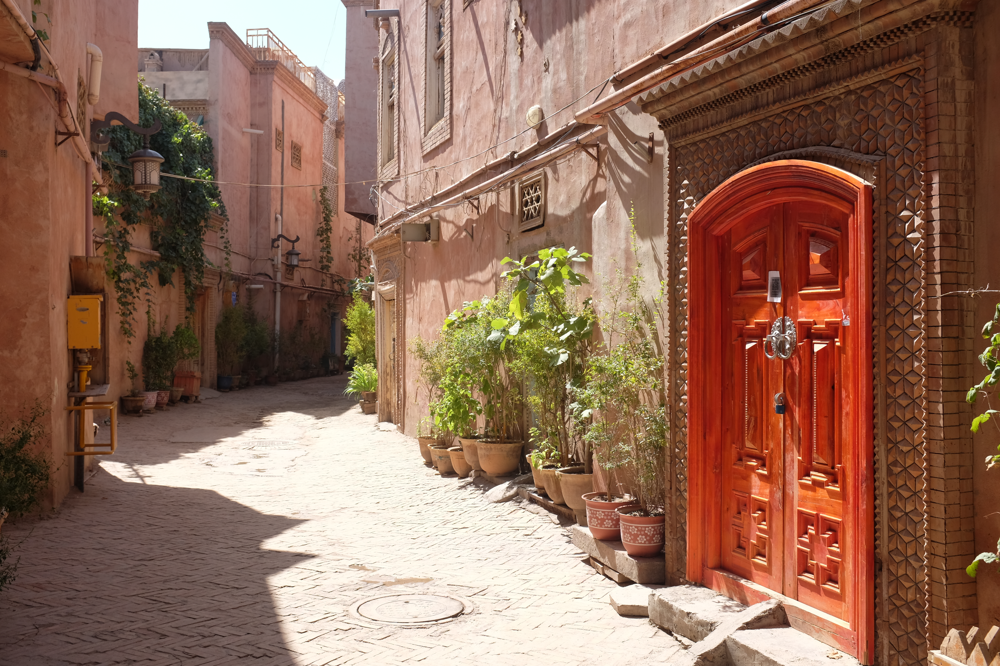
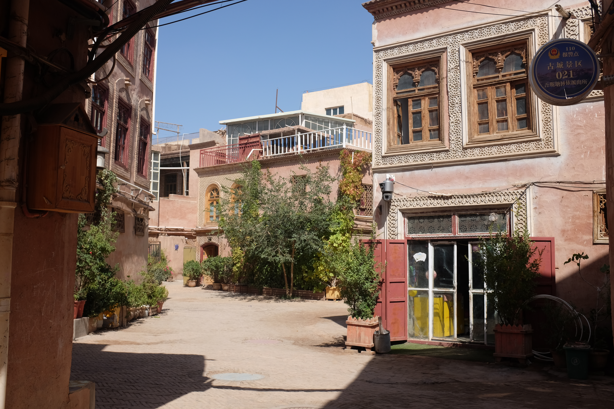
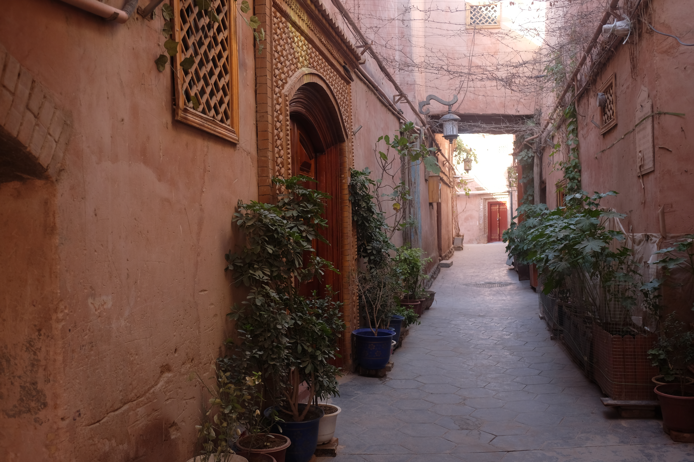
Families are still living in the old town, and children are often found playing throughout. They pay passing-by tourists no mind. When two familiar men meet, they shake hands with both hands. And the elders play blissfully with the children. It’s completely functional as a small, ethnic minority town – with signs of Chinese administration (signage in Chinese).
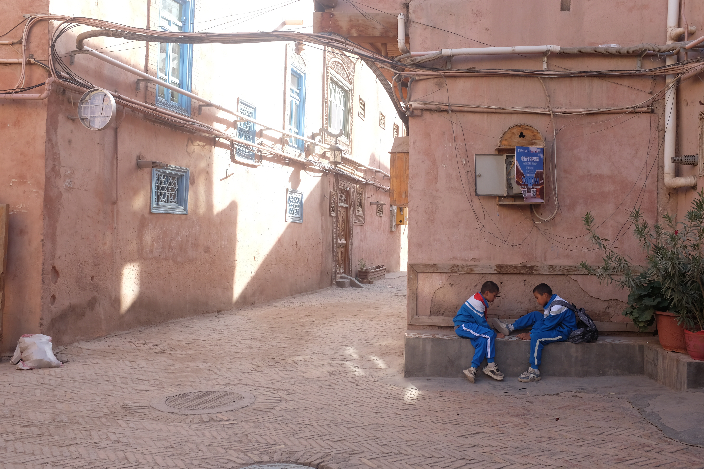
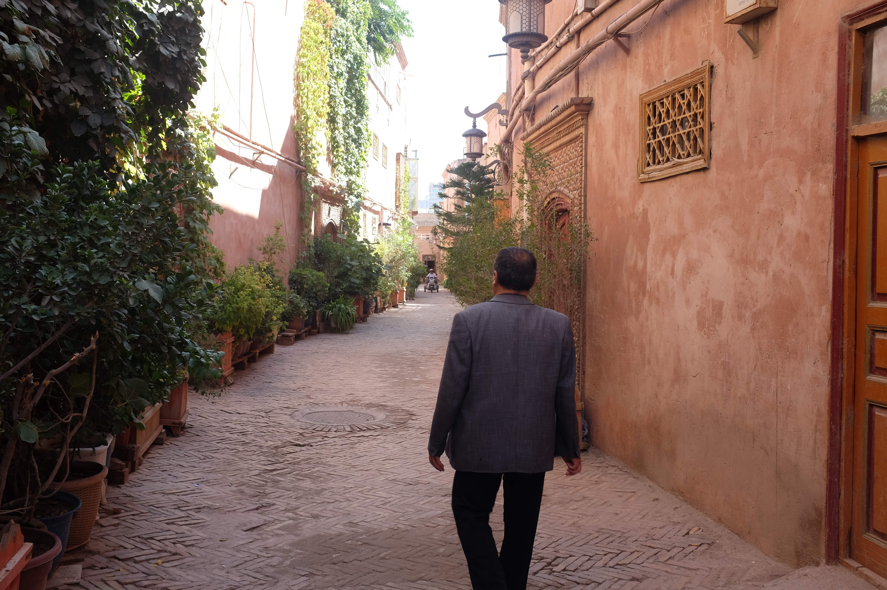
I have the famous meat soup that is made in a pot, called Gangzi Rou (缸子肉). The men making it are all ethnic, and they are hard at work. Their service motto is: tell me what you want, I say OK, you pay for it, I forget what you want, and you come ask for it again and I deliver it around to you as it comes. Amazing.
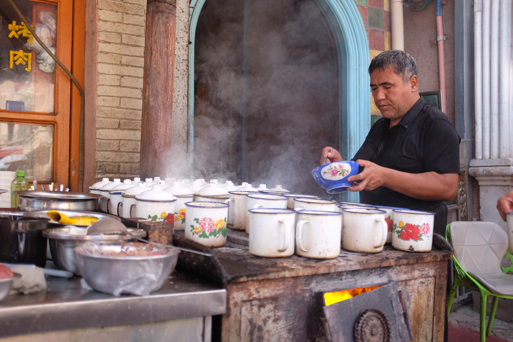
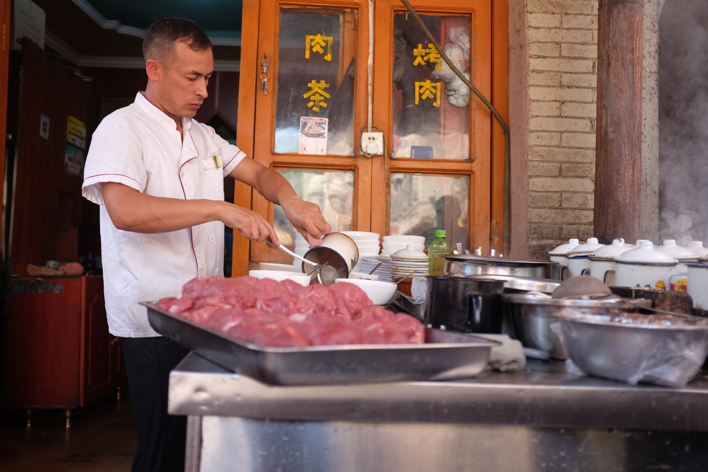
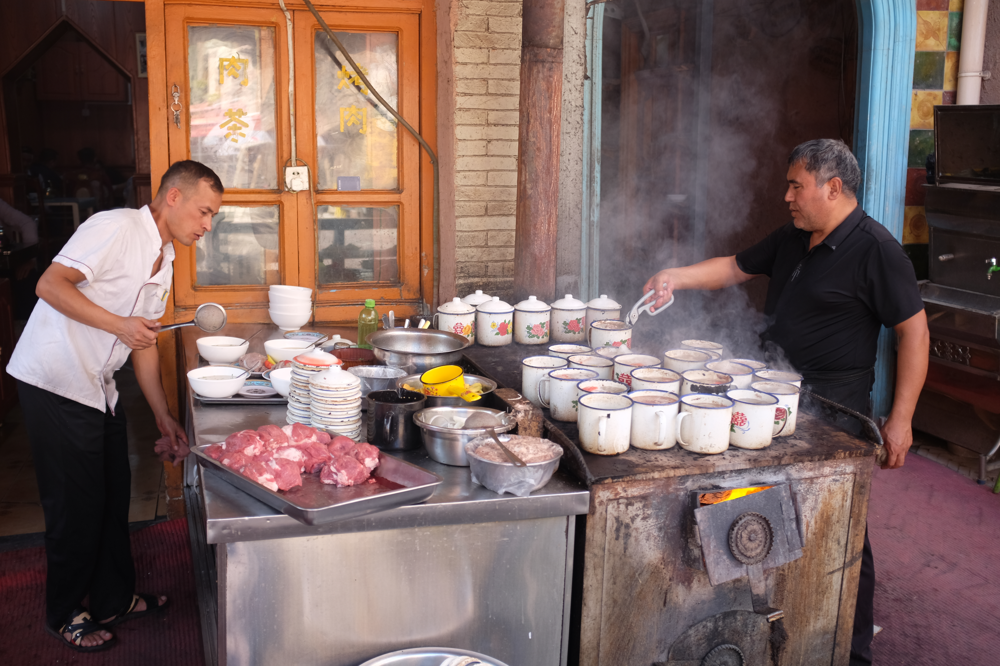
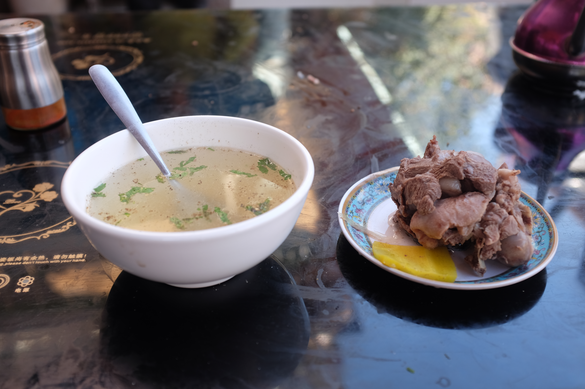
The market has hundreds of shops, but also nothing really of interest as a result. Trinkets -- a lot of them, in either tile, magnet, or plushie form. On the way, I come across an ethnic Han lady dressed up in a fever dream imagination of what an ethnic woman would wear: deep hues of blue and red laced with silver, wrapped around the body with a headpiece to match. It probably is one of the more grotesque parts of tourism.
Later at night when I have another walkabout, I see the old Gaotai (高台) neighbourhood, which is the last remaining old development of old town Kashgar. It’s closed now and had been for two months for rejuvenation works by the time I had arrived. It’s strange to see the entrance be walled off with a massive, Chinese-style slab. Apparently, it’s been in decline for ages.
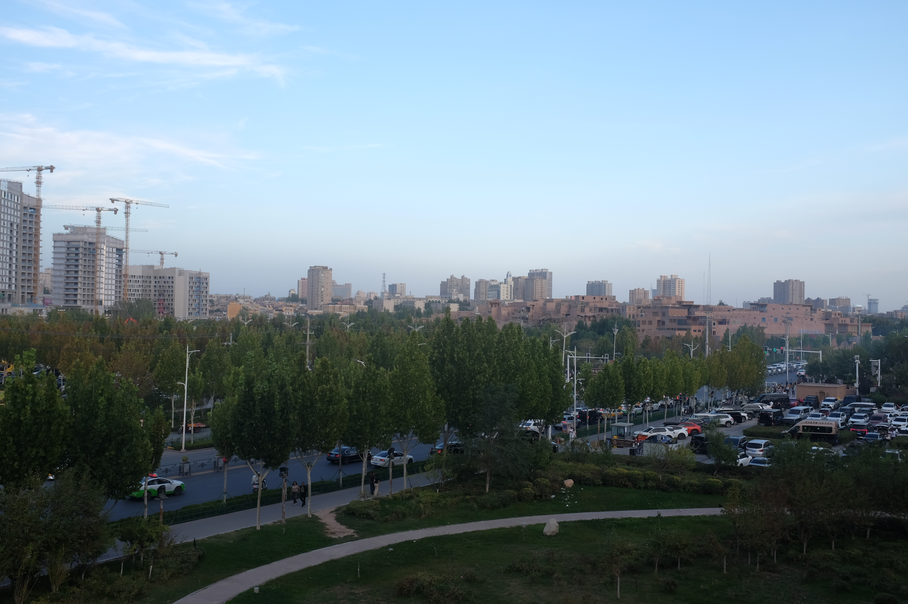
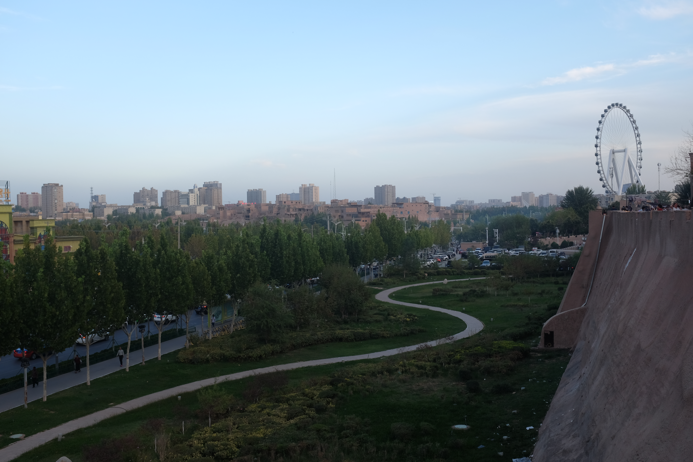
In my time outside, an ethnic man peddles his jade to me for a ridiculous price. I hadn’t seen a beggar in China for a long time. I recall the time in 2005 when I was here with my mother and they would swarm the cars, but that seemed to have disappeared with development. Old tricks die hard out here in the smaller towns though. Once I wouldn’t pay his price, he showed his surgery scar to me and said he needed it for health. Another old trick in the book.
The sun is setting now, and along the eastern wall is a row of bars and live music. The noise here is the loudest I’ve heard all day. All the restaurant and bars are trying to outcompete each other in decibels. Women – I don’t presume ethnic minority – are dressed in ethnic garb and dancing at the front to draw the attention of men, who are sat around a table of beers. There are a lot of that – just men - with the classic shaved head and cigarette in mouth, middle-aged and sun beat, just watching and filming the show. A middle-aged lady pretends to join in the dance at some point. The noise and ogling trumps the ethnic garb as the most grotesque thing I’ve seen all day.
But I look out across the eastern wall and see the old Gaotai civilisation, and it’s peaceful in the distance. A large Ferris wheel debuts on its right-hand side.
I duck into the small alleys to go back to the hotel. I get back a moment of visual, and audial silence. Almost eerily quiet: I can hear a pin drop despite having just come from the cacophony of the main stream. And the city noise diminishes into a sleepy, small desert whisper.